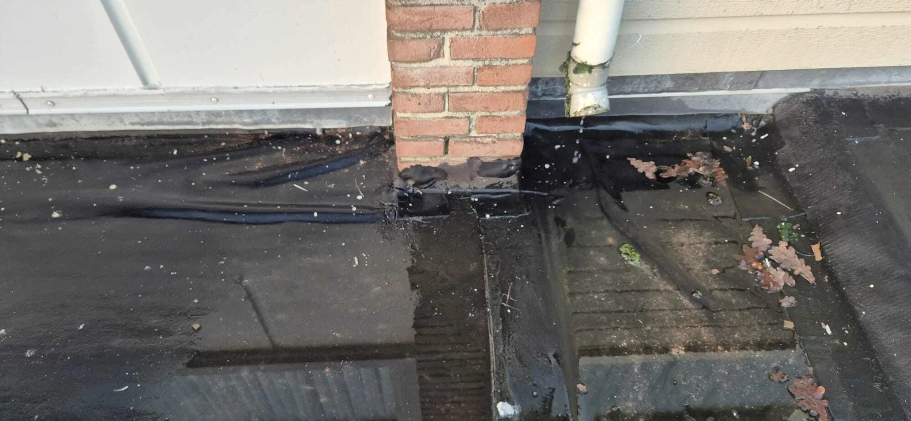
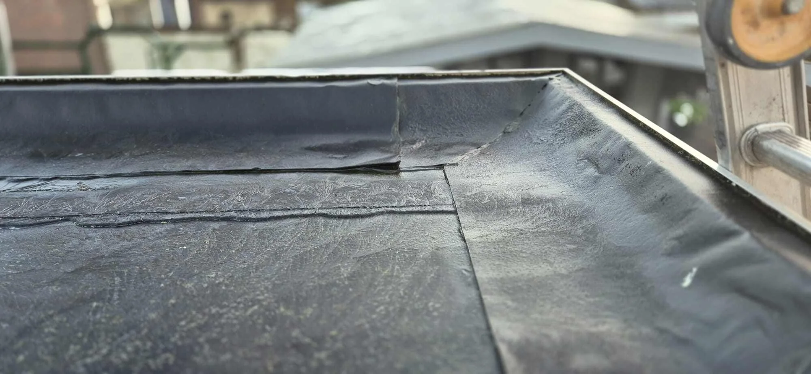
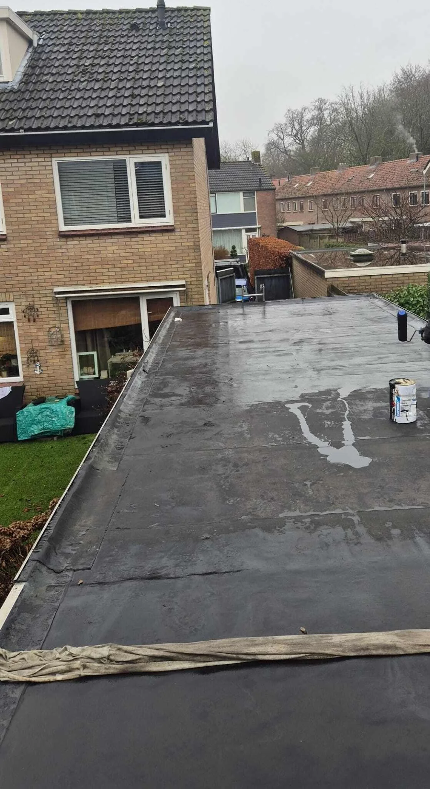
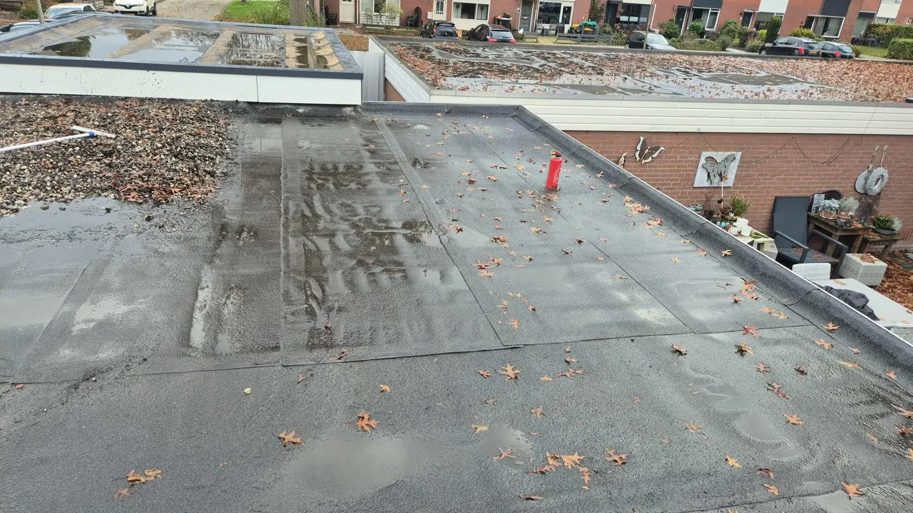

Cluster 1
Dakonderhoud & Inspectie
Een thematische kennisbanksectie met een pillarpagina en ondersteunende artikelen. Begin bij de hoofdpagina voor overzicht, of kies direct het specifieke onderwerp dat past bij uw situatie.

Artikelen in dit cluster
De pillar pagina geeft het overzicht. De ondersteunende blogs behandelen deelvragen, signalen, kosten, risico's en praktische keuzes.
 Dakinspectie: wat wordt er gecontroleerd en wat zegt dat echt?Ondersteunende blog
Dakinspectie: wat wordt er gecontroleerd en wat zegt dat echt?Ondersteunende blog

Daklekkage voorkomen: wat onderhoud wel kan en nietOndersteunende blog Dakonderhoud: hoe het de levensduur van je dak verlengtOndersteunende blog
Dakonderhoud: wat is zinvol?Pillar pagina
Dakonderhoud: hoe het de levensduur van je dak verlengtOndersteunende blog
Dakonderhoud: wat is zinvol?Pillar pagina

Onderhoud aan platte daken: waar gaat het in de praktijk mis?Ondersteunende blog Onderhoud van pannendaken: wat heeft wél effect en wat niet?Ondersteunende blog
Onderhoud van pannendaken: wat heeft wél effect en wat niet?Ondersteunende blog

Wanneer is dakonderhoud niet meer zinvol?Ondersteunende blog
Zelf je dak controleren: wat kun je zien en wat niet?Ondersteunende blogGratis dakinspectie: inzicht in de staat van uw dakOndersteunende blog